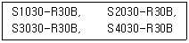
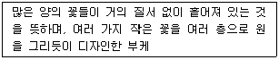
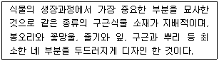

화훼장식기사 (2005-08-07 기출문제)
1과목: 화훼재료 및 형태학
1. 다음 중 장일성 화훼에 속하는 것은?
- Pharbitis nil Choisy.
- Callistephus chinensis Nees.
- Calendula officinalis L.
- Cosmos bipinnatus Cav.
(정답률: 75%)

2. 다음 학명 표기법에 대하여 옳지 않은 것은?
- 속명과 명명자의 첫 글자는 대문자를 사용한다.
- 학명은 정자체로 쓰며, 굵고 진하게 써야 한다.
- 속명과 종명을 기재하는 이명법을 사용한다.
- 라틴어화 하여 쓰여지고 라틴어 발음을 한다.
(정답률: 84%)
3. 국화의 경우 10월 이후 동지아가 생겨서 로제트를 형성한다. 이 로제트를 타파하기 위한 방법은?
- 저온 후 고온 장일
- 고온 후 저온 단일
- 장일 후 저온
- 단일 후 고온
(정답률: 90%)
4. 원추화서(圓錐花序)를 바르게 설명한 것은?
- 가장자리의 꽃이 먼저 피고 가운데로 피어 들어가는 것
- 퉁퉁한 육질의 가운데 축에 작은 꽃들이 밀생하여 붙는 것
- 소화경이 여러번 갈라져 원뿔 모양을 이루는 것
- 꽃송이 전체가 원형을 이루는 것
(정답률: 알수없음)
5. 꽃은 종류마다 개화특성이 다르므로 채화시기를 달리해야 한다. 꽃이 1/3정도 피었을 때 잘라야 하는 것은?
- Dendranthema grandiflorum Kitamura.
- Callistephus chinensis Nees.
- Dahlia hybrida Hort.
- Gladioulus gandavensis Van Houtte.
(정답률: 72%)
6. 다음 중 화훼류의 형태에 대한 설명으로 틀린 것은?
- 등나무는 복엽으로 되어 있다.
- 엽연(葉緣)은 잎의 가장자리 형태를 말한다.
- 엽선(葉先)은 잎끝의 형태를 말한다.
- 장미는 단엽(單葉:simple leaf)으로 되어 있다.
(정답률: 알수없음)
7. 다음 중 1,2년초가 아닌 것은?
- Celosia cristata L.
- Portlaca grandiflora Hook.
- Nelumbo nucifera Gaerthn.
- Althaea rosea Cav.
(정답률: 84%)
8. 다음 중 덩이줄기(tuber)가 아닌 화훼식물은?
- 아네모네
- 칼라
- 칼라디움
- 튤립
(정답률: 75%)
9. 다음 중 총상화서 식물로만 되어 있는 것은?
- 아카시아나무, 때죽나무
- 질경이, 아카시아나무
- 쥐똥나무, 질경이
- 천남성, 안스리움
(정답률: 92%)
10. 다음 화색에 대한 설명 중 틀린 것은?
- 화색은 꽃잎에 함유되어있는 색소에 의해 결정된다.
- 색소의 종류를 크게 나누면 카로티노이드(carotenoid)류와 플라보노이드(flavonoid)류 그리고 베타레인으로 나눌 수 있다.
- 카로티노이드는 카로틴(carotene)과 크산토필(xanthophyll)의 총칭으로 꽃잎에만 있는 것이 아니라 잎 뿌리, 과실 등에 널리 분포한다.
- 카로티노이드는 일반적으로 물에는 수용성이고, 지방이나 리포이드(lipoid)에는 잘 녹는다.
(정답률: 90%)
11. 다음 중 금잔화의 학명은?
- Pharbitis nil Choisy.
- Viola tricolor L.
- Helianthus annus L.
- Calendura officinalis L.
(정답률: 85%)
12. 다음 중 숙근성 초화류가 아닌 것은?
- Chrysanthenum zawadskii Herb.
- Aster koraiensis Nakai.
- Gerbera jamesonii Bolus.
- Gloriosa rothschildiana O`Brien
(정답률: 73%)
13. 진주암을 1,400`C 정도의 고온으로 급격히 고온처리하여 만든 백색의 인공토양은?
- vermiculite
- perlite
- peatmoss
- osmanda
(정답률: 100%)
14. 국화꽃의 구조에 해당되지 않는 명칭은?
- 총포
- 부관
- 설상화
- 통상화
(정답률: 알수없음)
15. 다음 절화류인 것은?(오류 신고가 접수된 문제입니다. 반드시 정답과 해설을 확인하시기 바랍니다.)
- Senecio cineraria DC
- Dianthus caryophyllus L.
- Calceolaria herbeohybrida Voss.
- Epipremnum aurum Bunt.
(정답률: 37%)
16. 강한 햇빛을 받아야 잘 자라는 양성화훼가 아닌 것은?
- 색비름
- 봉선화
- 옥잠화
- 페튜니아
(정답률: 92%)
17. 다음은 자연 건조 방법으로도 손쉽게 건조화 제작이 가능한 것들을 나열하였다. 가장 적당치 못한 것은?
- Limonium sinuatum Mill.
- Gladioulus gandavensis Van Houtte.
- Gypsophila paniculata L.
- Celosis sristata L.
(정답률: 82%)
18. 차광에 의한 단일처리로 개화를 촉진시킬 수 없는 화훼는?
- Dendranthema grandiflorum Kitamura.
- Callistephus chinensis Nees.
- Kalanchoe blossfeldiana Poelln.
- Euphorbia pulcherrima Will ex Klot.
(정답률: 91%)
19. 다음 꽃의 구조에 대한 설명 중 옳지 않은 것은?
- 꽃받침과 꽃잎을 화피(perianth)라고 한다.
- 암술을 이루는 기본단위를 심피(carpel)라고 한다.
- 꽃받침, 꽃잎, 수술, 암술 4가지를 모두 갖춘 꽃을 완전화(per fect flower)라고 한다.
- 암꽃과 수꽃이 각각 따로 있는 식물을 일가화(一家花:monoecious)라고 한다.
(정답률: 100%)
20. 팬지 학명은 Viola x wittrockiana 이다. 중앙의 x 표시는 무엇을 의미하는가?
- 종간교배종이라는 뜻이다.
- Viola 와 wittrockana 와 교배하였다는 것을 표시한 것이다.
- 속간 교배에 의하여 생긴 종이란 뜻이다.
- 제비꽃과 팬지 종간 교배종임을 뜻한다.
(정답률: 92%)
2과목: 화훼품질유지 및 관리론
21. 물에 꽂으면 줄기 끝이 잘 갈라지는 절화는?
- 튤립
- 수선화
- 델피니움
- 칼라
(정답률: 82%)
22. 다음 습도에 관한 설명 중 알맞은 것은?
- 공중 습도가 높아지면 뿌리 발달이 좋다.
- 토양의 수분 함량 증가는 토양 속의 공기함량을 감소시켜 뿌리 발달이 좋다.
- 공중 습도가 낮아지면 잎으로부터 수분 증발량이 적어진다.
- 토양 수분이 많을 때에는 지하부에 비해 지상부인 잎이 발달한다.
(정답률: 67%)
23. 다음 중 미세종자를 파종할 때 적당한 관수 방법은?
- 저면 관수법
- 살수 관수법
- 지중 관수법
- 점적 관수법
(정답률: 77%)
24. 화훼의 키를 낮게 하여 관상 가치를 높이는데 적합하지 않은 물질은?
- 에틸렌(Ethephon)
- 싸이코셀(Cycocel)
- 벤젤아데닌(BA)
- 유니코나졸(Uniconazol)
(정답률: 64%)
25. 식물체 내의 수분의 역할과 가장 거리가 먼 것은?
- 화학반응의 기질
- 세포내 팽압 유지
- 액포내 삼투압 조절
- 식물 체온 유지
(정답률: 56%)
26. 다음 중 식물체 내에 이용되는 미량원소로 바르게 짝지어진 것은?
- Fe, Mo, Mg
- Cu, Fe, Zn
- Mg, B, Cu
- S, Cl, Mg
(정답률: 67%)
27. 식물의 생장속도와 온도에 대한 설명으로 바른 것은?
- 생장속도가 최대로 되는 점을 최고온도라고 한다.
- 최적온도는 화훼의 종류, 품종에 따라 다르다.
- 같은 품종일 경우 생장단계와 관계없이 최적온도는 일정하다.
- 야간온도는 주간보다 10℃이상 낮을 때 생장 속도가 가장 빨라진다.
(정답률: 알수없음)
28. 절화의 재수화(rehydration)를 위한 흡수증진 방법으로 옳지 않은 것은?
- 줄기를 물속에서 재 절단하는 방법
- 절단면을 태워 탄화처리 하는 방법
- 살균작용 및 흡수촉진 작용을 하는 보존용액에 침지하는 방법
- 절화줄기 기부를 80~100℃의 물에 1시간 정도 담갔다가 꺼내는 열탕처리 방법
(정답률: 알수없음)
29. 광포화점을 바르게 설명한 것은?
- 광합성을 위한 CO2의 흡수량과 방출량이 같게 되는 광도
- CO2 흡수량이 방출량의 1/2지점이 되는 점
- CO2 흡수량이 방출량의 2배가 되는 점
- 광도가 증가되어 어느 한계에 도달하면 그 이상은 광합성은 증가하지 않는 것
(정답률: 82%)
30. 장일조건에서 개화가 촉진되는 식물이 아닌 것은?
- 페튜니아
- 금잔화
- 맨드라미
- 과꽃
(정답률: 22%)
31. 다음 화훼식물의 재배작형 중 촉성재배에 대하여 바르게 설명된 것은?
- 국화: 8월 하순경부터 한밤중(22:00~02:00) 전등조명으로 전등사이의 밝기를 60~70룩스 되게 하여 12~2월 개화, 출하하도록 한다.
- 튤립: 구근을 11월 하순~12월 상순에 상자에 심어서 1개월 후에 발근이 된 후 5월경까지 -2℃의 저장고에 저장해 두었다가 5월 하순~6월에 개화 하도록 한다.
- 게발선인장: 9월에 단일처리를 실시하여 10월 상순에서 11월에 개화, 출하시킨다.
- 나팔나리: 구근을 영하 1℃에서 장기간 보관 후 고랭지에서 7~9월에 개화시킨다.
(정답률: 91%)
32. 각종 식물의 병해충의 방제법의 적용이 잘못된 경우는?
- 장미의 잿빛곰팡이병(Botrytis blight)의 발생을 억제하는데 시설내의 환기를 잘하고 난방방법을 개선하여 실내습도를 내리는 것이 매우 중요하다.
- 근두암종병, 역병, 문우병 등 토양병해는 병원균이 없는 토양, 연작한 토양을 사용하여 그 발생을 줄일 수 있다.
- 벤자민고무나무의 민달팽이는 습기가 있는 장소, 화분 밑, 낙엽 밑에 잠복하므로 온실을 다습하지 않게 관리하고 잠복처가 될 만한 곳을 깨끗하게 한다.
- 식물바이러스는 약제에 의하여 구제하기 어려우므로 치유 보다는 바이러스 매개충의 회피, 철저한 검역, 무병종묘의 이용 등으로 대체해야 한다.
(정답률: 62%)
33. 직접 판매를 위한 절화의 수확적기(최적 발육단계)에 대한 설명으로 틀린 것은?
- 달리아 - 꽃이 충분히 개화했을 때
- 독일붓꽃 - 꽃이 충분히 개화했을 때
- 튤립 - 봉오리 색이 반쯤보일 때
- 프리지아 - 첫 봉오리가 피기 시작할 때
(정답률: 74%)
34. 다음 절화와 저장 온도가 알맞게 짝지어진 것은?
- 안스리움 : 3~5℃
- 장미 : 10~15℃
- 헬리코니아 : 8~12℃
- 카네이션 : -4℃
(정답률: 64%)
35. 다음 건생 식물과 습생식물, 수생식물의 설명으로 틀린 것은?
- 건생 식물은 저수 조직이 발달되어 있다.
- 습생 식물은 통기조직이 발달되어 있다.
- 수생 식물은 음지에서 잘 자란다.
- 습생 식물은 토란, 알로카시아, 부들, 붓꽃 등이 있다.
(정답률: 60%)
36. 식물의 초장을 짧게 하고 엽육을 두껍게 하는데 관여하는 광선은?
- 적외선
- 자외선
- 열선
- 가시광선
(정답률: 알수없음)
37. 세포벽 형성에 필수적인 원소로 세포막의 투과성을 조절하는 작용을 하며 결핍시에는 뿌리와 잎의 끝부분이 말라 죽는 현상이 나타난다. 이 원소는?
- 질소(N)
- 인(P)
- 칼슘(Ca)
- 마그네슘(Mg)
(정답률: 알수없음)
38. 다음 중 화훼류의 발아 적온이 바르게 짝지어진 것은?
- 15℃전후 : 프리뮬라
- 15~20℃ : 나팔꽃
- 20~25℃ : 델피니움
- 25~30℃ : 거베라
(정답률: 50%)
39. 절화를 꽂은 물에 식초를 몇 방울 넣어주는 주된 이유는?
- 꽃에 영양분을 주기 위하여
- 화색을 좋게 하기 위해서
- 물을 산성화하여 미생물의 증식을 억제하기 위하여
- 줄기에 기포가 생기는 것을 방지하기 위하여
(정답률: 82%)
40. 글라디올러스와 같은 무한화서의 절화를 수평으로 눕혀 놓으면 화서의 끝이 수직으로 휜다. 여기에 관여하는 현상은?
- 굴열성
- 굴광성
- 중력굴성
- 표면장력
(정답률: 알수없음)
3과목: 화훼장식학
41. 상업용 공간의 화훼장식에 대한 설명 중 옳지 않은 것은?
- 강한 장식효과를 위해 꽃피는 식물과 대형 꽃꽂이의 배치는 필수적이다.
- 고객을 유인하기 위한 실내장식과 디스플레이(display)에 꽃의 이용도가 매우 높다.
- 화려하고 창의적인 디자인보다 실용적인 디자인이 더 선호된다.
- 대형 분식물의 배치는 필수적이며 건물의 구조에 따라 실내정원이 조성되기도 한다.
(정답률: 91%)
42. 화훼장식에 사용되는 소재와 관련된 설명 중 바른 것은?
- 철사가위(wire cutters)는 굵은 절화나 절엽 또는 절지를 자르고 다듬는데 이용된다.
- 플로랄 테이프(floral tape)는 접착용 테이프로 철사를 감싸거나 소재를 묶는데 사용된다.
- 워터 튜버(water tubes)는 줄기가 짧거나 수분공급이 어려운 상황에서 주로 이용된다.
- 철사는 번호가 낮을수록 굵기가 가늘다.
(정답률: 67%)
43. 고려시대 꽃과 관련된 사람을 지명하는 설명이 틀린 것은?
- 화주궁관 : 꽃을 간직하는 사람
- 압화사 : 꽃을 간직하는 사람
- 권화사 : 꽃을 담당하는 사람
- 인화담원 : 임금이 내리는 꽃의 전달자
(정답률: 73%)
44. 다음 중 우리나라 절화장식의 역사적 배경에 대한 설명으로 바르지 못한 것은?
- 우리나라 꽃꽂이는 토속적 원시제에서 기원하여 불전공화를 주체적으로 수용함으로써 하나의 개별 예술로 발전 되어 왔다.
- 고려시대는 불교문화의 융성으로 사원에서는 장엄하고 다양한 의식이 자주 거행되었고, 궁중에서는 화려한 장식문화가 발전함으로써 꽃꽂이의 표현 영역이 크게 넓어졌다.
- 조선시대에는 꽃꽂이에 관한 전문 서적이 저술되고, 또 후기에 이르러서는 실학자들에 의해 과학적인 연구의 대상이 되기도 하였다.
- 한국의 전통적인 꽃꽂이는 첫째 불전, 신전, 기타 의식에서의 헌공화, 둘째 생활공간의 장식, 셋째 꽃을 통한 미의 창조로서의 화예 또는 화도의 세 갈래 방향에서 발전해 왔으며, 이 방향은 오늘날까지 절화장식의 주류를 이루고 있다.
(정답률: 60%)
45. 서양 꽃꽂이 중 자연적인 디자인 양식으로 구성된 것은?
- 보태니컬(botanical), 밀드플레
- 피닉스(phoenix), 파라렐 베리타티브
- 파라렐 베지타티브, 보태니컬
- 레디얼 베지타티브, 비더마이어
(정답률: 70%)
46. 다음 중 코사지(Corsage) 제작시 유의점으로 가장 옳게 설명된 것은?
- 갈란드(Galand)를 조립해서 하는 것이 원칙적인 방법이다.
- 시각적인 균형이 중요하며 한 쪽으로 치우치지 않게 한다.
- 재료의 선택은 의복의 색상을 고려하여 조화를 이루게 한다.
- 코사지의 크기는 통일감을 위해 사람마다 어느 정도 같게 한다.
(정답률: 82%)
47. 다음 중 르네상스 시대에 대한 설명으로 틀린 것은?
- 르네상스시대의 스타일은 비잔틴 시대, 그리스 시대, 로마시대의 영향을 많이 받았다.
- 과일, 꽃, 잎을 엮어 만든 갈란드가 벽과 둥근 아치모양의 천장을 장식하기도 했다.
- 화려한 행사와 축제가 많았으므로 다른 시대에 비해 장식의 분위기가 아주 화려했으며, 크고 긴 꽃들을 많이 사용하였다.
- 이 시대에는 초승달 모양의 많은 비대칭적인 곡선이 유행했다.
(정답률: 84%)
48. 꽃줄기가 약하거나 속이 비어있는 상태의 꽃을 그대로 살리고 싶을 때 철사를 밑에서 꽃의 중심을 향해 주사를 놓은 것처럼 줄기 속에 꽂아 줄기를 강하게 만드는 방법 또는 꽃의 줄기를 휘어지게 하는 방법은?
- 시큐어링 법(securing method)
- 인서션 법(insertion method)
- 익스텐션 법(extension method)
- 소잉 법(sewing method)
(정답률: 알수없음)
49. 한국 전통 꽃꽂이 양식에 관한 설명으로 옳은 것은?
- 대범한 느낌을 주며, 인공적인 손길이 거의 느껴지지 않게 표현한다.
- 인공적인 기교미를 강조하고, 격식화된 작업과정을 매우 중요시한다.
- 풍부한 양감표현을 위주로 나타내는 것이 한국 전통꽃꽂이의 특징이다.
- 자연성과 인공성의 화합을 중시하고, 여백의 인위적인 처리가 대담하다.
(정답률: 47%)
50. 다음 전통적인 서양 꽃꽂이에 대한 설명으로 틀린 것은?
- 수직형(Vertical)은 수직을 강조하기 위해 높이는 화기의 2배이상으로 사용하는 것이좋다.
- 수평형(Horizontal)은 좌우로 확장된 선을 가지고 있어서 부드럽고, 편안한 이미지를준다.
- 부채형(Fan)은 중심부에 밝은색의 작은 꽃을, 가장자리에는 어두운 색의 큰 꽃을 사용하면 안정적이다.
- S자형(Hogarth curve)은 두 개의 크리센트(Crescent)를 서로 등을 보게 연결해 놓은 듯한 형태이다.
(정답률: 84%)
51. 스켈톤 잎(skeleton leaves) 제작 시 알맞은 방법은?
- 물 1L에 수산화칼륨 115g을 넣어 1시간정도 끓인 후 찬물에 씻어 엽육을 긁어낸다.
- 물 1L에 수산화칼슘 55g을 넣어 1시간정도 끓인 후 표백제로 씻어 엽육을 긁어낸다.
- 물 1L에 수산화칼륨 115g을 넣어 2시간이상 끓인 후 찬물에 씻어 엽육을 긁어낸다.
- 물 1L에 수산화칼슘 555g을 넣어 2시간정도 담가 둔 후 표백제에 씻어 엽육을 긁어낸다.
(정답률: 알수없음)
52. 신부화에 주로 많이 이용하는 꽃으로 일반명과 학명을 바르게 연결한 것은?
- 리시안서스 - Euphorbia pulcherrima Willd.
- 카네이션 - Dicentra spectabilis D.
- 수국 - Hippeastrum hybridum H.
- 칼라 - Zantedeschia aethiopica L.
(정답률: 93%)
53. 화훼장식과 그것이 유래한 시대가 바르게 연결된 것은?
- 비잔틴시대 - 원뿔형 나무 모양
- 르네상스시대 - 터지 머지
- 바르크시대 - 크리스마스 트리
- 영국 조지아 시대 - 호가스 디자인
(정답률: 알수없음)
54. 다음 설명 중 틀린 것은?
- 유럽형 디자인은 선과 형태표현이 우선이다.
- 서구식 디자인은 기하학적이거나 면 또는 입체적 구성을 특징으로 한다.
- 디자인을 하는데 있어서 비율에 영향을 주는 요소는 꽃의 형태, 꽃의 색상, 용기의 종류가 있다.
- 대칭축과 중심축은 같은 위치에 있지 않다.
(정답률: 70%)
55. 분식물의 종류, 가꾸는 방법, 관리시 주의사항이 설명되어 있는 조선전기의 저서와 저자로 바르게 연결된 것은?
- 산림경제 - 홍만선
- 색경증집 - 박세당
- 양화소록 - 강희안
- 임원십육지 - 서유구
(정답률: 알수없음)
56. 신부부케의 철사 이용법 중 피어스(pierce method)기법에 적당한 꽃은?
- 안개, 백합, 장미
- 아스파라거스, 거베라, 과꽃
- 데이지, 해바라기, 국화
- 카네이션, 달리아, 장미
(정답률: 82%)
57. 영국 조지안 시대 꽃과 식물의 향기는 전염병을 물리치는 신비로움이 있는 것으로 인식되어 많은 사람들이 향기 있는 꽃으로 꽃다발을 만들어 외출 시에 들고 다녔다. 이러한 꽃다발은?
- 노우즈 게이(nosegay)
- 클러스터(cluster) 부케
- 보겐(Bogen)
- 선 버스트(sun burst) 부케
(정답률: 94%)
58. 한국의 화훼장식의 역사 중 삼국시대에 나타난 벽화의 꽃꽂이 형태 특징이 아닌 것은?
- 연꽃의 선과 공간처리의 자연 묘사적 표현
- 매우 풍성한 느낌의 좌우대칭 형태의 공화의 한 형식
- 꽃을 흩뿌리는 산화도 형식
- 연꽃을 병입가에 한 줄기로 보이듯 세워 전후좌우 부드러운 곡선의 대칭으로 꽂은 형식
(정답률: 알수없음)
59. 다음 구성형식에 의한 분류 중 장식적인 구성이 발전되어 나타난 새로운 현대적 구성은?
- 식생적 구성
- 형-선적 구성
- 구조적 구성
- 오브제적 구성
(정답률: 85%)
60. 꽃 선물에 이용되는 생신축하 경사어로 적당하지 않는 것은?
- 60세 : 축 회갑(祝 回甲)
- 70세 : 축 고희(祝 古稀)
- 80세 : 축 송수(祝 頌壽)
- 90세 : 축 백수(祝 白壽)
(정답률: 알수없음)
4과목: 화훼장식 디자인 및 제작론
61. N.C.S 표기법에서 S2030-Y80R에 관한 설명으로 맞는 것은?
- 30% 검정색도 20% 유채색도를 나타내며, Y80R은 80%의 노랑 색조를 띤 빨강이다.
- 20% 검정색도 30% 유채색도를 나타내며, Y80R은 80%의 빨강 색조를 띤 노랑이다.
- 20% 유채색도 30% 검정색도를 나타내며, Y80R은 80%의 빨강 색조를 띤 노랑이다.
- 30% 무채색도 20% 흰색도를 나타내며, Y80R은 80%의 노랑 색조를 띤 빨강이다.
(정답률: 64%)
62. 매몰건조시 주의점으로 바르지 않은 것은?
- 꽃은 완전히 개화한 후 채취해서 건조해야 한다.
- 건조 전에 꽃에 물방울이 없도록 한다.
- 건조될 꽃이 고른 압력을 받도록 매몰시켜야 한다.
- 겹꽃의 경우 붓을 사용하여 꽃잎 사이의 물기를 완전히 제거한다.
(정답률: 67%)
63. 실내공간에 화훼 장식품들을 제작 배치 시 설계 도면에 관한 설명이 틀린 것은?
- 평면도 - 물체의 위에서 본 것으로 1차원적인 그림이다.
- 입면도 - 실내 각 면을 수평으로 본 그림이다.
- 상세도 - 중요한 부분을 자세하게 나타낸 그림이다.
- 배치도 - 시설물이나 식재계획, 장식물의 배치 등을 나타낸 도면이다.
(정답률: 75%)
64. 감법혼색(=감산혼합)의 3원색으로 볼 수 없는 것은?
- 마젠타(Magenta)
- 시안(Cyan)
- 녹색(Green)
- 노랑(Yellow)
(정답률: 알수없음)
65. 절화 줄기의 고정재료나 고정방법에 대한 설명이 적절한 것은?
- 플로랄 폼은 저절로 물을 흡수하도록 침구법을 사용한다.
- 수선화는 침봉을 이용해 꽂으면 훨씬 더 쉽게 줄기를 고정 할 수 있다.
- 절화로 나오는 난과식물은 유리관이나 깔때기, 워터튜브 등에 꽂아 연결시킬 수 없다.
- 국화는 줄기 내부가 비어있어 철사를 줄기 내부로 넣어주어 줄기가 넘어가지 않게 한다.
(정답률: 75%)
66. 색채의 감정효과를 활용한 화훼장식의 맞지 않는 사례는?
- 히스테리, 경련 등 신경장애의 치료를 위해 파란색계열의 장식을 하였다.
- 식탁장식을 위하여 식욕을 돋구어 주황색 계열의 장식을 만들었다.
- 부드러운 감정을 전하기 위해 고명도, 저채도의 근접색상으로 꽃다발을 만들었다.
- 아픈 사람의 병문안을 위해 희망을 주도록 한색계열의 장식을 선택하였다.
(정답률: 82%)
67. 배색을 통하여 '화려한 화훼장식'을 하고자 할 때 가장 알맞은 배색은?
- 고명도, 저채도의 근접색상 배색
- 고명도, 고채도의 근접색상 배색
- 저명도, 고채도의 보색색상 배색
- 고명도, 고채도의 보색색상 배색
(정답률: 알수없음)
68. 동양식 절화 장식에 사용되는 주지의 기호로 바른 것은?
- △ : 제 3주지
- □ : 제 1주지
- ○ : 종지
- T : 제 2주지
(정답률: 82%)
69. Unit 기법의 설명으로 맞는 것은?
- 카네이션이나 국화 같은 질감에도 와이어링 할 수 있는 기법이다.
- 테이핑한 철사를 중심으로 점차적 크기를 증대하면서 부케나 코사지에 많이 사용한다.
- 야채나 과일 밑둥에 철사를 감아 조립한다.
- 아래에서 위로 뽑아 올린 철사의 끝을 둥근 고리모양으로 만드는 기법이다.
(정답률: 79%)
70. 화훼장식 디자인 과정에서 절화 장식물의 평가 방법 중 옳지 않은 것은?
- 신부화는 신부의 분위기와 어울리며, 가볍고 취급하기 편하게 제작되었는가를 평가한다.
- 테이블장식의 경우 식욕을 돋구며, 식사하기에 편리하고, 대화가 가능하게 디자인되었는가를 평가한다.
- 공간 테마장식은 최대한의 공간에 유행하는 디자인을 적절하게 활용하였는가를 평가한다.
- 꽃꽂이의 경우 소재들의 고정방법과 지지재의 사용이 적합한가를 평가한다.
(정답률: 70%)
71. NCS로 표기된 아래의 색을 보고 배색의 유형을 선택하면?

- 톤 그라데이션
- 명도 그라데이션
- 채도 그라데이션
- 색상 그라데이션
(정답률: 70%)
72. 평면적인 화면에 생화, 건조소재, 기타 다양한 식물 외소재를 입체적 또는 반평면적으로 배치하여 표현하는 기법은?
- 리스(wreath)
- 콜라주(collage)
- 갈란드(garland)
- 형상물(figure)
(정답률: 55%)
73. 화원에서 분화의 보관시 주의해야 할 사항으로 옳지 않은 것은?
- 분화의 대부분은 50~60%정도의 습도에서 유지될 수 있다.
- 관엽식물은 10~15℃ 정도 온도를 유지해 주어야 한다.
- 화원의 전시실 조명은 2,000~3,000lux로 매일 12~14시간 정도 유지해 준다.
- 히야신스, 크로커스, 무스카리, 나팔수선과 같은 구근식물은 5~12℃ 정도의 낮은 온도가 알맞다.
(정답률: 39%)
74. 다음과 같은 스타일의 신부부케를 지칭하는 것은?

- 터지머지(Tuzzy muzzy) 부케
- 라운드(Round) 부케
- 오벌 라운드(Oval round) 부케
- 방사선형(Radiation) 부케
(정답률: 80%)
75. 다음은 자연적인 디자인 양식(natural design style) 중 무엇을 설명한 것인가?

- 보태니컬(botanical)
- 래디얼 베지터티브(radial vegetative)
- 랜드케이프(landscape)
- 패럴랠 베지터티브(parallel vegetative)
(정답률: 알수없음)
76. 절화장식물의 관리요령으로 맞지 않는 것은?
- 각 소재들은 관리방법이 다르므로 다양한 소재의 종류를 선택하는 것은 피해야 한다.
- 절화 장식품이 충분한 수분공급이 되는지 확인한다.
- 절화에서 에틸렌이 발생하므로 비닐에 포장된 상태로 오래 방치하지 않는다.
- 선풍기, 에어컨 등 직접적인 바람을 쏘이지 않는다.
(정답률: 75%)
77. 화훼장식에 있어서 디자인의 전체적인 틀과 골격을 형성하는 요소는?
- 방향
- 크기
- 선
- 면
(정답률: 알수없음)
78. 꽃잎이나 초화류의 넓은 입에 바느질하듯 철사를 꿰어주는 방법은?
- 후크법(hook method)
- 소잉법(sewing method)
- 인서션법(insertion method)
- 헤어핀법(hair-pin method)
(정답률: 80%)
79. 화훼장식에 이용되는'플로랄 폼'자르기로 바른 것은?
- 플로랄 폼은 경우에 따라서 여러 가지 공구로 자를 수 있다.
- 충분한 수분공급을 위해서 물이 담겨진 용기 내 충분한 공간을 두고 채운다.
- 용기의 모든 면을 꽉 채우도록 자른다.
- 플로랄 폼의 한쪽 구석을 잘라내서는 안 된다.
(정답률: 69%)
80. 절화장식의 디자인 과정으로 바른 것은?
- 구체적인 구상과 스케치 → 도면과 서류 작성 → 연습 →소재의 구입과 준비 →장식물의 제작과 포장, 운반, 설치 → 주제의 결정 →공간의 특성 조자 분석 → 평가
- 주제의 결정 → 공간의 특성 조자 분석 → 구체적인 구상과 스케치 →도면과 서류 작성 → 연습 → 소재의 구입과 준비 → 장식물의 제작과 포장, 운반, 설치 → 평가
- 공간의 특성 조사 분석 → 구체적인 구상과 스케치 → 주제의 결정 → 연습 →소재의 구입과 준비 → 장식물의 제작과 포장, 운반, 설치 → 평가
- 도면과 서류 작성 → 평가 → 주제의 결정 → 공간의 특성 조사 분석 → 구체적인 구상과 스케치 → 소재의 구입과 준비 → 장식물의 제작과 포장, 운반, 설치
(정답률: 82%)
5과목: 화훼유통 및 경영론
81. 유통혁신에 의한 셀프서비스 시대의 사회에서 일련의 광고 캠페인을 매듭짓는 마지막 수단으로서 고객의 구매시점에서 행하여지는 광고를 무엇이라고 하는가?
- 노벨티광고
- 인터넷광고
- POP(Point of Purchase)광고
- CF광고
(정답률: 37%)
82. 화훼 유통과정에서의 여러 기능 중 물리적 기능이 아닌 것은?
- 운송 기능
- 저장보관 기능
- 가공처리 기능
- 표준화 기능
(정답률: 84%)
83. 다음 중 프렌차이즈 체인의 특징이 아닌 것은?
- 본점과 가맹점이 종적인 연대를 갖는다.
- 가맹점은 본점으로부터 경영지도를 받는다.
- 가맹점은 본점에 로열티를 지불한다.
- 본점과 가맹점의 소유주가 같다.
(정답률: 72%)
84. 다음 주요 수출 화훼품목의 생산 동향 설명 중 맞지 않는 것은?
- 장미는 정부 수출관련 시설 및 기술지원으로 재배 면적이 증가 추세에 있다.
- 나리는 고품질 절화생산 기반이 마련되었으나 구근가격이 높아 원가 부담요인으로 작용하고 있다.
- 수출용 선인장은 외국 육성 품종이므 로열티 또는 묘 구입비용이 너무 높아 수출 효자 품목이 아니다.
- 난류는 일본보다 가격경쟁력이 있고 중국보다 재배기술 및 품질이 우위에 있어 당분간 수출 지속이 예상된다.
(정답률: 알수없음)
85. 다음 중 농업입지이론에 관한 이론을 제시한 사람은?
- 리카르도
- 아담스미스
- 폰 튀넨
- 브링크만
(정답률: 70%)
86. 거베라 절화가 1묶음 평균의 꽃대 길이가 몇 cm 이상일 때 1급(1등급)을 받을 수 있는가?(오류 신고가 접수된 문제입니다. 반드시 정답과 해설을 확인하시기 바랍니다.)
- 55cm 이상
- 65cm 이상
- 70cm 이상
- 75cm 이상
(정답률: 55%)
87. 일반적으로 꽃이 피는 분식물의 경우, 1일 12시간 조명을 한다면, 다음중 적당한 광도는?
- 약 500 lux
- 약 1,000 lux
- 약 1,500 lux
- 약 2,500 lux
(정답률: 42%)
88. 매장의 중앙에 설치해 양면에서 진열 상태를 볼 수 있어 진열 효과를 배가시키는 쇼케이스 형태는?
- 중앙측면 라운드 형
- U자형 라운드 형
- 사각형 라운드 형
- 양면형 라운드 형
(정답률: 64%)
89. 효율적인 화훼 유통체계의 확립 방법이 아닌 것은?
- Cold Chain System 및 습식유통 등으로 화훼 품질 개선
- 유통체계가 복잡한 화훼 공판장의 활용보다 신속한 개별산지 도매상인에 의한 거래 활성화
- 화훼 유통정보 시스템 및 규격 표준화 강화
- 공동선별, 포장, 판매 등 산지 유통 개선 조성 및 상품화 촉진
(정답률: 알수없음)
90. 관련 법규상 농산물 표준규격에서 화훼류의 등급 규격은 몇 등급으로 구분되는가?
- 3등급
- 4등급
- 6등급
- 12등급
(정답률: 알수없음)
91. 다음 중 품목별 연간 화훼생산액(2004년 기준)에 대한 설명이다. 알맞은 것은? (단, 품목은 절화류, 분화류(난류 포함), 초화류(화단용), 관상수류, 화목류, 종자ㆍ종묘류, 구근류를 말함)
- 분화류(난류 포함)는 연간 농가 판매액이 관상 수류보다 크다.
- 절화류의 연간 농가 판매금액이 분화류의 품목에 비해 적다.
- 구근류는 전량 수입에 의존하므로 농가 판매액을 산정할 수 없다.
- 전화류 중 연간 농가판매액이 가장 많은 작목은 거베라다.
(정답률: 84%)
92. 농산물의 적정한 품질관리를 통하여 농산물의 상품성을 높이고 공정한 거래를 유도함으로 농업인의 소득증대와 소비자 보호에 이바지함을 목적으로 제정 시행 중인 법은?
- 농산물 검사법
- 농수산물 품질 관리법
- 농산물 가공 산업 육성법
- 농산물 품질 관리법
(정답률: 88%)
93. 다음 수익성 비율 계산 방법 중 틀린 것은?
- 투자수익률 = 순영업이익/영업용 자산
- 영업용자산회전률 = 순매출액/영업용자산
- 영업이익률 = 영업순이익/순영업용자산
- 매출이익률 = 당기순이익/순매출액
(정답률: 40%)
94. 다음 중 절화류에 있어 1묶음이 20본(줄기)의 수인 것은?
- 국화(스텐다드)
- 리아트리스
- 리시안사스
- 글라디올러스
(정답률: 90%)
95. 다음 중 화훼 품종보호를 위한 UPOV협약 조건이 아닌 것은?
- 구별성(Distinctness)
- 신규성(Novelty)
- 정보성(Uniformity)
- 균일성(Information)
(정답률: 59%)
96. 화훼경영에서 손익분기점에 대한 설명이 올바른 것은?
- 손익분기점 분석에서는 보통 비용을 고정비와 변동비로 분해해서 순수이익과 관계를 검토 한다.
- 한 기간의 매출액이 당해 기간의 총 비용과 일치하는 점이다.
- 한 기간의 매출액이 그 이상이면 손실이 나고 그 이하이면 이익이 생기는 점이다.
- 한 기간의 매출액이 그 이상이면 손실이 나고 그 이하라도 손실이 생기는 점이다.
(정답률: 알수없음)
97. 화원의 매출액(조수입)이 200만원이고 경영비(100만원), 생산비가 150만원, 소득이 100만원, 순수입이 50만원인 경우 소득율은?
- 40%
- 50%
- 60%
- 70%
(정답률: 70%)
98. 다음 중 절화 수명 연장제 및 선도 유지로 사용하기에 적당하지 않은 것은?
- KNO3
- STS(Silver thiosulfate)
- Sucrose(자당)
- HQS(8-hydroxyqunoline sulfate)
(정답률: 73%)
99. 우리나라 화훼유통 구조의 문제점이 아닌 것은?
- 유사도매시장(재래시장)에서 거래를 주도하고 있다.
- 분화류에 대해서는 농산물 품질 관리원에서 일부품목에 대해서만 표준출하규격을 설정해 놓고 있다.
- 공동출하체계가 미흡하고 포장단위의 표준화가 저조한 실정에 있다.
- 지나친 수도권 중심의 시장 형성이 이루어져 있다.
(정답률: 46%)
100. 우리나라 화훼수출에서 수출 가능성이 가장 높은 나라는?
- 네덜란드
- 미국
- 일본
- 싱가포르
(정답률: 67%)